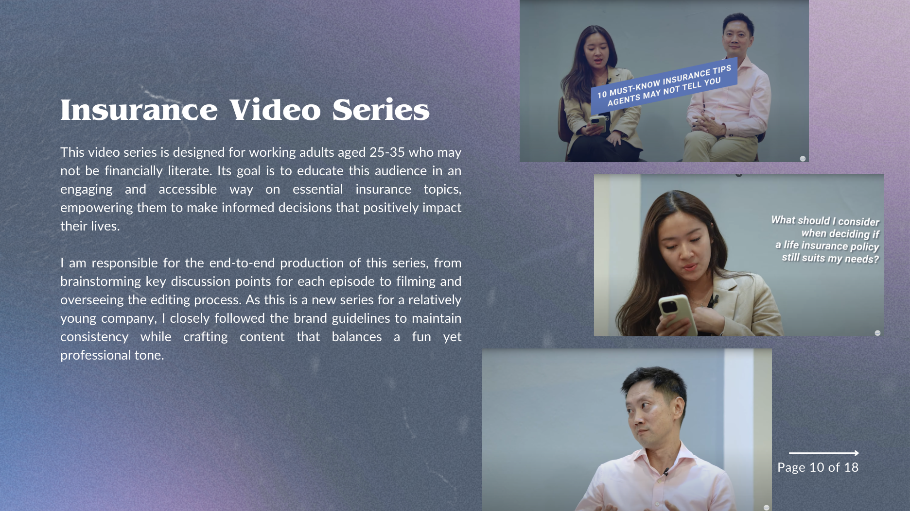
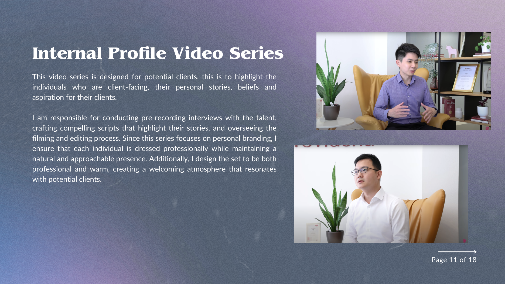
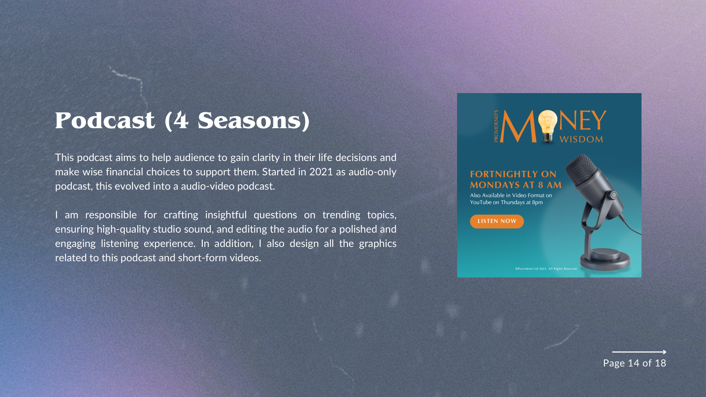
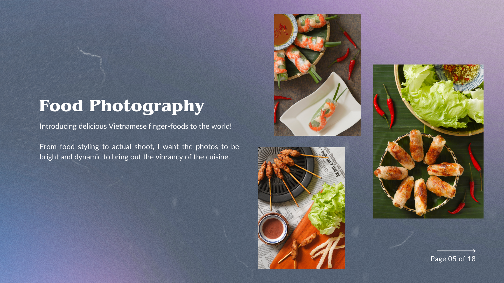
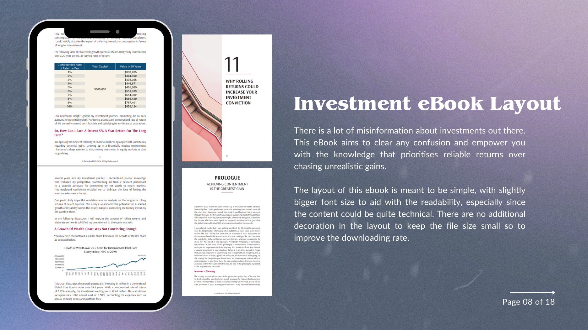

Guardians of the Lonely Departed
A short film about Tommy Yu, who honours elders by performing their last rites when no one else will.
Watch film ↗I'm a
I bring stories to life through video, audio and design, creating engaging content for digital and social platforms.
I'm a multimedia designer with expertise in video production, audio editing and graphic design. I create content that makes ideas clear and engaging across digital and social platforms.
My work spans film, podcast production, photography, visual design and live events. I keep developing my skills and following new ways audiences connect with media.
Production, design and brand experience across digital media.
Providend Group
Providend Ltd
Team Axis
Calibre Picture & Idea
Singapore University of Social Sciences
Photography Major · Temasek Polytechnic
Singapore University of Social Sciences
Singapore University of Social Sciences
Video production · Audio editing · Graphic design · Photography · Storyboarding · Scriptwriting · Adobe Suite · WordPress · Blackmagic ATEM · HTML · CSS
Selected work in video, audio, photography and editorial design. Explore the full presentation ↗
A short film about Tommy Yu, who honours elders by performing their last rites when no one else will.
Watch film ↗
End-to-end production of accessible insurance education videos for working adults, from discussion points and filming to editing oversight.

Interviews, scripts, guest coordination, warm set design and production oversight for personal stories and external conversations.

Audio editing, studio sound, questions, graphics, video production and short-form reels for a podcast about life and financial decisions.

Conceptual beauty imagery exploring edible products and bright food photography showcasing Vietnamese finger foods.

A simple, readable layout that makes technical investment content easier to understand and download.
Project previews are from my portfolio presentation.
Interested in collaborating? Let's connect.